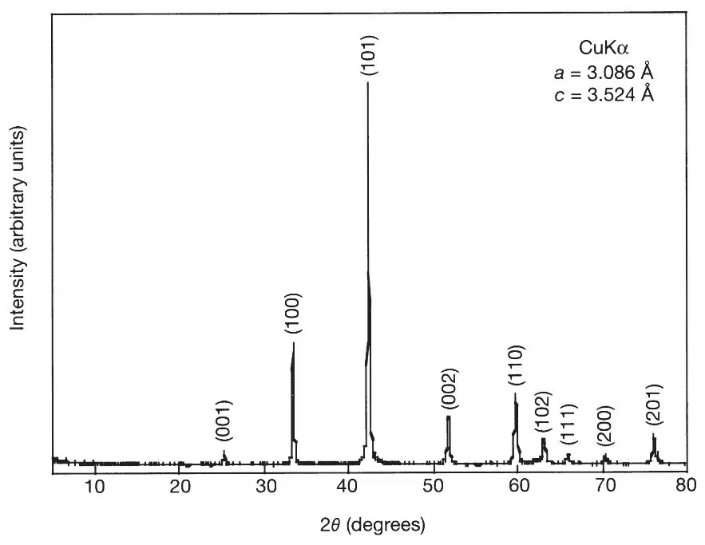
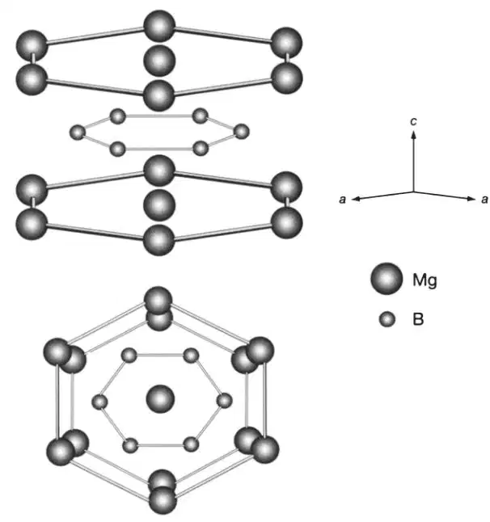
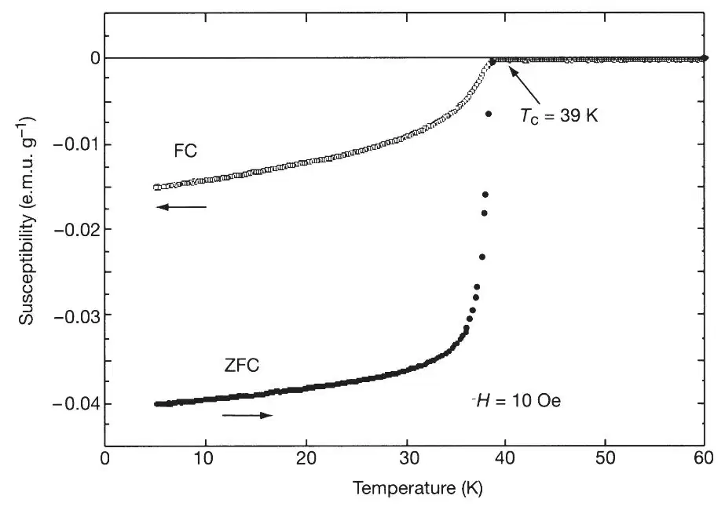
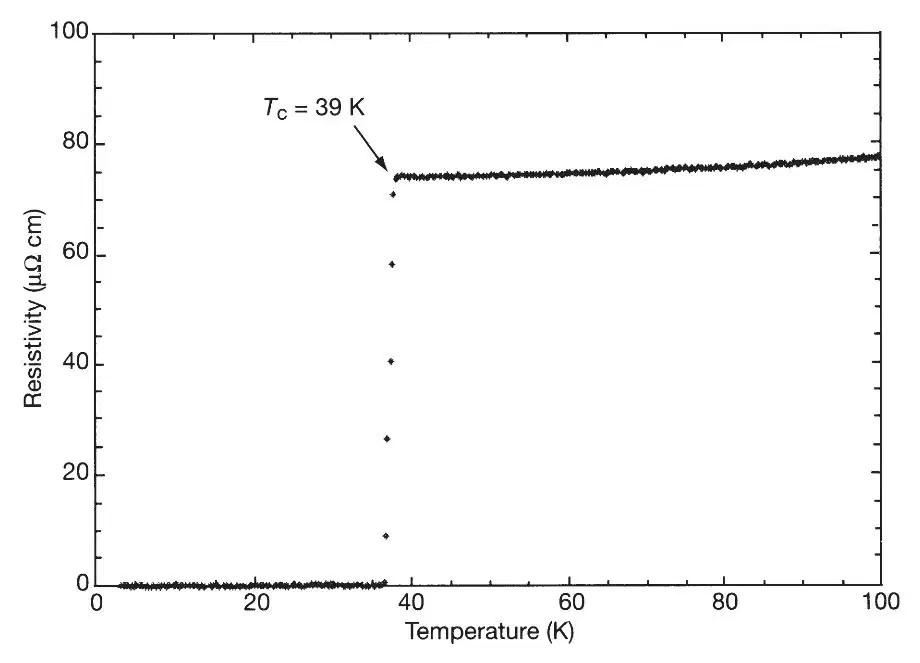

中文
中文J. Nagamatsu et al.
Editor’s Note
By 2001, a variety of materials based on copper oxides that superconduct at temperatures over 130 K had been observed. Here physicist Jun Nagamatsu and colleagues reported their observation of superconductivity at a temperature of “just” 39 K, but in a very different material: the metallic compound magnesium diboride. This work established a new record for the superconducting transition temperature in metallic compounds, for which the previous high had been, since 1973, only 23 K. Later work would show that the behaviour of this compound fits the standard Bardeen–Cooper–Schrieffer theory of superconductivity, although with some peculiarities. Due to the low cost of its constituent elements and fabrication, magnesium diboride has become a widely used superconductor for practical applications. 中文
In the light of the tremendous progress that has been made in raising the transition temperature of the copper oxide superconductors (for a review, see ref. 1), it is natural to wonder how high the transition temperature, Tc, can be pushed in other classes of materials. At present, the highest reported values of Tc for non-copper-oxide bulk superconductivity are 33 K in electron-doped CsxRbyC60 (ref. 2), and 30 K inBa1-xKxBiO3 (ref. 3). (Hole-doped C60 was recently found4 to be superconducting with a Tc as high as 52 K, although the nature of the experiment meant that the supercurrents were confined to the surface of the C60 crystal, rather than probing the bulk.) Here we report the discovery of bulk superconductivity in magnesium diboride, MgB2. Magnetization and resistivity measurements establish a transition temperature of 39 K, which we believe to be the highest yet determined for a non-copper-oxide bulk superconductor. 中文
THE samples were prepared from powdered magnesium (Mg; 99.9%) and powdered amorphous boron (B; 99%) in a dry box. The powders were mixed in an appropriate ratio (Mg:B=1∶2), ground and pressed into pellets. The pellets were heated at 973 Kunder a high argon pressure, 196 MPa, using a hot isostatic pressing (HIP) furnace(O2Dr.HIP, Kobelco) for 10 hours. Powder X-ray diffraction was performed by a conventional X-ray spectrometer with a graphite monochromator (RINT-2000, Rigaku). Intensity data were collected with CuKα radiation over a 2θ range from 5° to 80° at a step width of 0.02°. 中文
Figure 1 shows a typical X-ray diffraction pattern of MgB2 taken at room temperature. All the intense peaks can be indexed assuming an hexagonal unit cell, with a=3.086 Å and c=3.524 Å. Figure 2 shows the crystal structure of MgB2 (ref. 5), of which the space group is P6 / mmm (no.191). As shown in Fig. 2, the boron atoms are arranged in layers, with layers of Mg interleaved between them. The structure of each boron layer is the same as that of a layer in the graphite structure: each boron atom is here equidistant from three other boron atoms. Therefore, MgB2 is composed of two layers of boron and magnesium along the c axis in the hexagonal lattice. 中文

Fig. 1. X-ray diffraction pattern of MgB2 at room temperature. 中文

Fig. 2. Crystal structure of MbB2. 中文
Magnetization measurements were also performed with a SQUID magnetometer (MPMSR2, Quantum Design). Figure 3 shows the magnetic susceptibility (χ=M / H, where M is magnetization and H is magnetic field) of MgB2 as a function of temperature, under conditions of zero field cooling (ZFC) and field cooling (FC) at 10 Oe. The existence of the superconducting phase was then confirmed unambiguously by measuring the Meissner effect on cooling in a magnetic field. The onset of a well-defined Meissner effect was observed at 39 K. A superconducting volume fraction of 49% under a magnetic field of 10 Oe was obtained at 5 K, indicating that the superconductivity is bulk in nature. The standard four-probe technique was used for resistivity measurements. 中文

Fig. 3. Magnetic susceptibility χ of MgB2 as a function of temperature. Data are shown for measurements under conditions of zero field cooling (ZFC) and field cooling (FC) at 10 Oe. 中文
Figure 4 shows the temperature dependence of the resistivity of MgB2 under zero magnetic field. The onset and end-point transition temperatures are 39 K and 38 K, respectively, indicating that the superconductivity was truly realized in this system. 中文

Fig. 4. Temperature dependence of the resistivity of MgB2 under zero magnetic field. 中文
(410, 63-64; 2001)
Jun Nagamatsu*, Norimasa Nakagawa*, Takahiro Muranaka*, Yuji Zenitani* & Jun Akimitsu*†
* Department of Physics, Aoyama-Gakuin University, Chitosedai, Setagaya-ku, Tokyo 157-8572, Japan
† CREST, Japan Science and Technology Corporation, Kawaguchi, Saitama 332-0012, Japan
Received 24 January; accepted 5 February 2001.
References:
1. Takagi, H. in Proc. Int. Conf. on Materials and Mechanisms of Superconductivity, High Temperature Superconductors VI. Physica C 341-348, 3-7 (2000).
2. Tanigaki, K. et al. Superconductivity at 33 K in CsxRbyC60. Nature 352, 222-223 (1991).
3. Cava, R. V. et al. Superconductivity near 30 K without copper: the Ba0.6K0.4BiO3 perovskite. Nature 332, 814-816 (1988).
4. Schön, J. H., Kloc, Ch. & Batlogg, B. Superconductivity at 52 K in hole-doped C60. Nature 408, 549-552 (2000).
5. Jones, M. & Marsh, R. The preparation and structure of magnesium boride, MgB2. J. Am. Chem. Soc. 76, 1434-1436 (1954).
Acknowledgements. This work was partially supported by a Grant-in-Aid for Science Research from the Ministry of Education, Science, Sports and Culture, Japan and by a grant from CREST.
Correspondence and requests for materials should be addressed to J.A. (e-mail: jun@soliton.phys.aoyama.ac.jp).